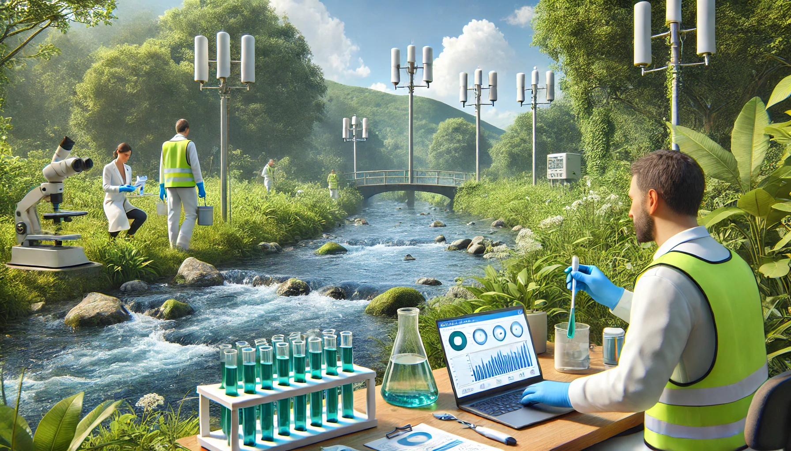
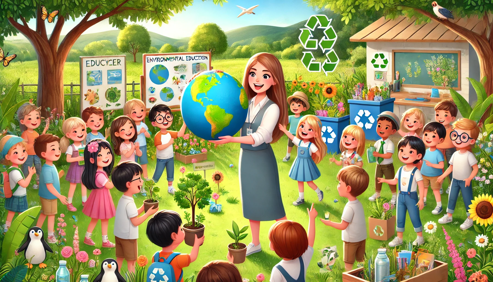

Projetos Ambientais
Acompanhe os principais projetos voltados para a preservação do Rio Itajaí-Açu e seus afluentes.

Projeto de Reflorestamento
Um projeto focado em restaurar as áreas verdes nas margens dos rios.

Monitoramento da Qualidade da Água
Monitoramento contínuo das condições da água dos rios da região.

Educação Ambiental em Escolas
Projetos de conscientização realizados nas escolas da região.